Scott Duncan
A collection of my work at Dunwoody
Contents - Outcomes, Artifacts and Reflections
- Evaluate the organizational structure of a business in order to facilitate data management.
- Illustrate networks used for the Internet.
- Determine that a database is properly structured.
- Create web solutions using a variety of programming languages.
- Articulate development solutions to peers and supervisors.
Outcome One:
Evaluate the organizational structure of a business in order to facilitate data management.
Artifact 1: "Agile" Activity Diagram
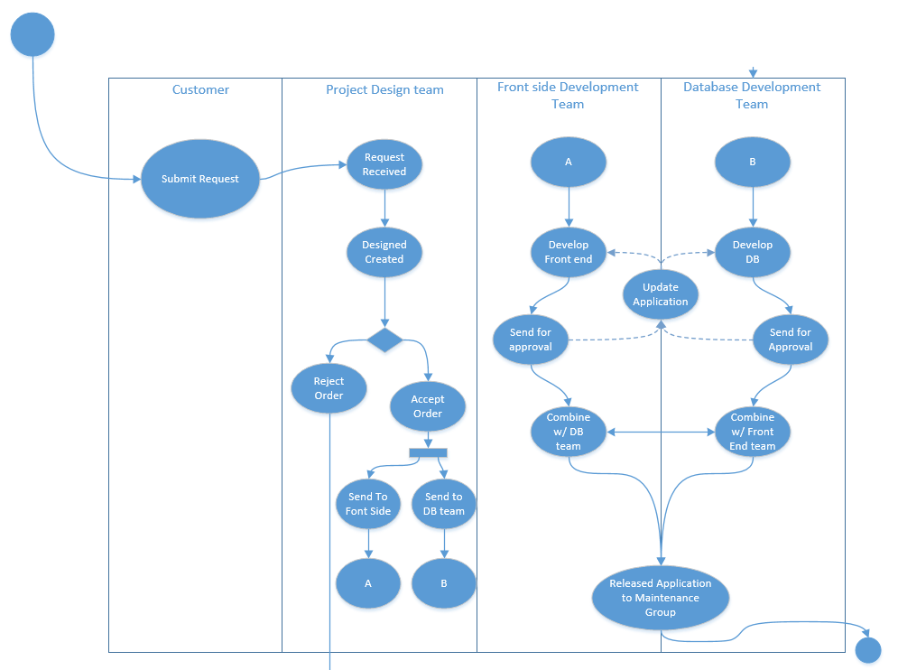This “Activity Diagram” shows the process and hierarchy of the flow of how a development company might handle and process a customer, or client, request. Each column represents a different branch of the company and shows the flow of responsibility from one department to another and how they relate to each other.
As you can see, a client submits a request for a project. Initially, the design team crafts a rough idea of how the project should look. If the “order” is rejected by the client, the Project Design Team starts the process over until the offer is “accepted”. The project is then sent to the Front Side Development Team and the Database/Backside Development Team. The two teams then work together to ensure their structures and ideas are merge-able.
After a final product is developed, it is sent to a Maintenance group that would do the beta/bug testing. The product is then shipped out to the customer where they would find the appropriate avenue for distribution, be it physically or digitally.
Artifact 2: "Agile" Use Case Diagram
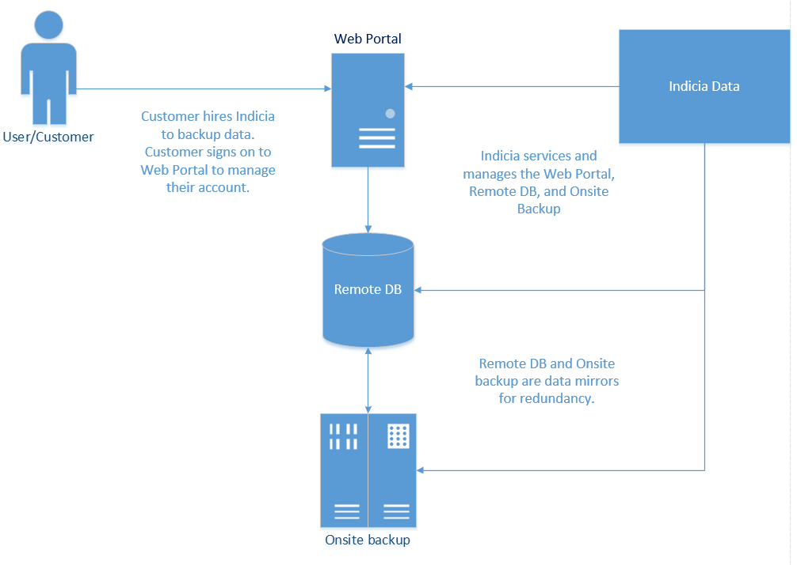This is a “Use Case Diagram” created for a faux company Called Indicia Data (ID). ID is a Data Solutions company that gets hired by businesses to manage all of their digital data.
The diagram shows a user or a client hiring ID to backup and manage their data. They gain access to an ID controlled web portal allowing the client to have rough overview access to the process that ID will be working on for this client. ID also uses this web portal to communicate with the client.
The web portal syncs with the remote database set up for the client, which ID also manages. ID then builds on site backups for all of the client’s data where backups are made for redundancy and in turn, syncs back to the remote database. The web portal continues to act as “home base” for communications between ID and the client.
Outcome 1 Reflection
These examples were taken from my Business Architecture class which focused on the structure and process of what a business goes through to ensure customer satisfaction in relation to a Database Company. These activities and projects were an excellent way to visualize and conceptualize how this process would work in a real world scenario.
I learned how many steps and inner-processes it takes to implement a fully functional, working, and effective business model of the workflow that a company would need to implement to ensure that a client’s needs were met. Each client needs their own specialized plan for their specific needs. The diagrams not only help the company with their workflow, but also can be presented to the client to help articulate the process that goes on behind the scenes. This keeps the client “in the loop” and gives them piece of mind that the company they have hired has a plan and an end goal for their project.
Every team, including each member of that team, has a specific job and “order of operations” to ensure the project gets developed in a timely manner while keeping the client in the loop. This process taught me that each team member is a necessary cog in the machine to bring an idea to reality. Work is divided among team members who all communicate with each other and ultimately release a suitable product for the client. Each step can be reviewed and edited as many times as is necessary to satisfy the client and their needs. A client can be an individual or a company.
Outcome Two:
Evaluate the organizational structure of a business in order to facilitate data management.
Artifact 1: Network Diagram
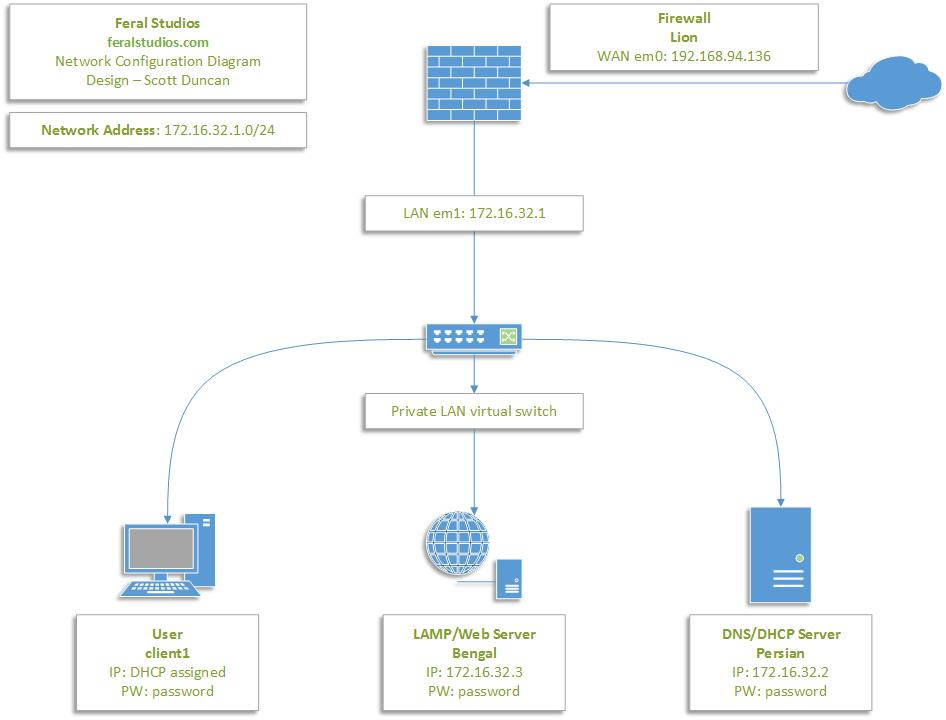The above diagram is the visual configuration of a local network that I setup through the use of virtual machines to simulate how one would setup an actual network for a small business or startup.
Below are some of the configuration settings that were used to make records of settings and configurations used by the network so that they could be redone in case of a mishap in the network. Proper documentation is always a good thing to have for not only yourself, but for someone else coming into your position later on.
Artifact 2: Configuration Settings
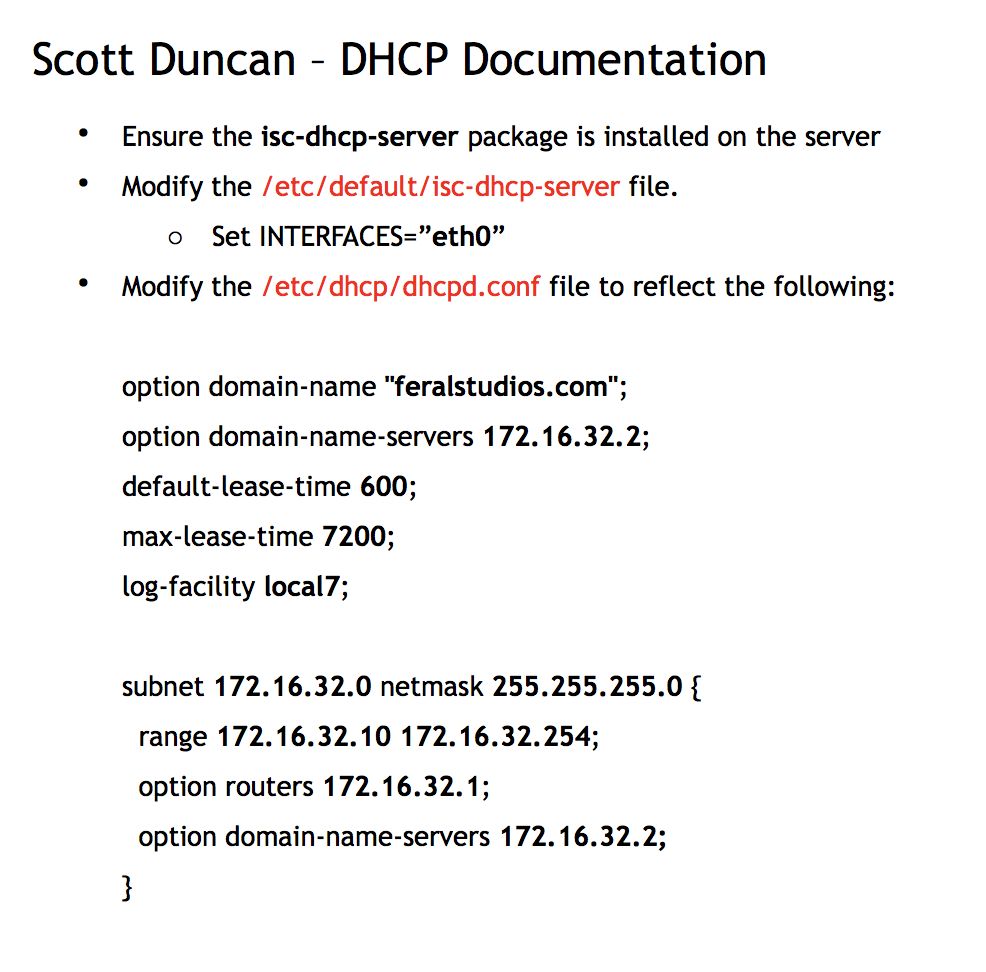Outcome 2 Reflection
I learned a great deal from this intense project. It gave me a great sense of pride to build a local network from the ground up. Not only did I learn how to do it, but I have careful documentation in case I ever need to do it again. I learned about all of the steps necessary to get a business up and running on the internet, and in the process, learned about each piece of a network, from the hardware, to the firewall, to the software responsible for tying it all together. Meticulous configuration details ensured that the network operated cleanly and efficiently.
Although I got frustrated at times, the end result when everything worked was a wonderful feeling. Before this activity, I didn’t know how important all of these pieces were to the overall “network puzzle”, but now I have a much greater understanding of how a local network is set up and how it should function.
Outcome Three:
Determine that a Database is Properly Structured.
Artifact 1: Data Normalization
Often times when dealing with raw data, you are given flat file documents like Excel spreadsheets or other forms of poorly organized data. The job of a good database designer is to take these documents and perform what is called Data Normalization. There are several steps to taking the data you see below and turning into a visual representation of what tables and columns you will need when it comes to constructing the database.
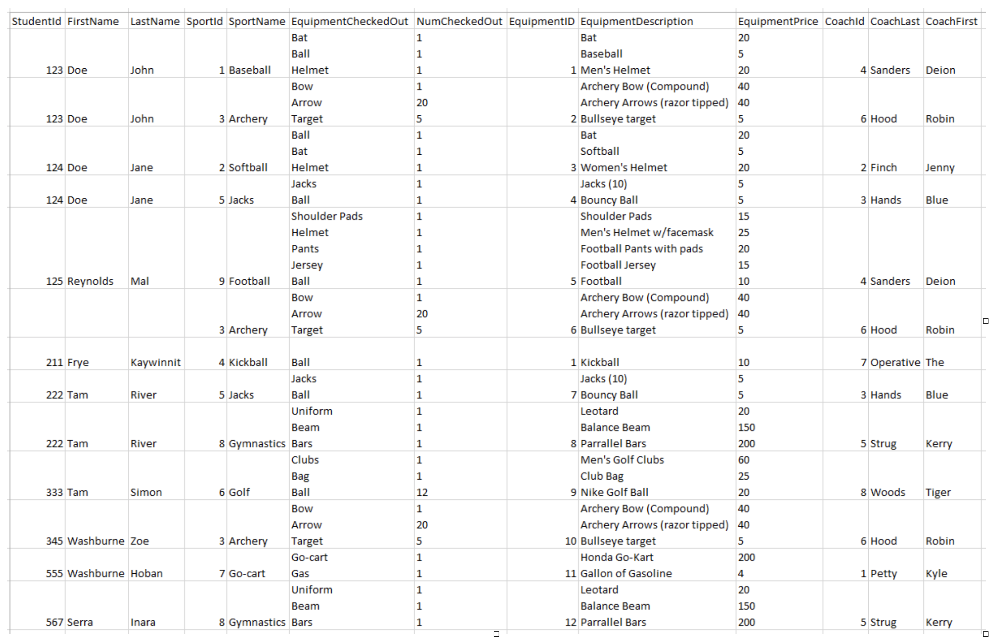Through the normalization process, I learned how to identify redundant data, ensure that all data had a proper home, and how to identify the key fields of what would become the database. This is a good example of how a company can come to you with a set of raw, unorganized data with the desire to transform it into a Relational Database and the steps you would take to make that happen for them.
With normalization, I transformed the above data set into a fully normalized visual representation of what the database would look like. An example of that can be found below. All of the data redundancies have been removed and the future database tables have been named and ordered. This process makes it simple to take this data, enter it in a database, and ensure that it is properly structured.
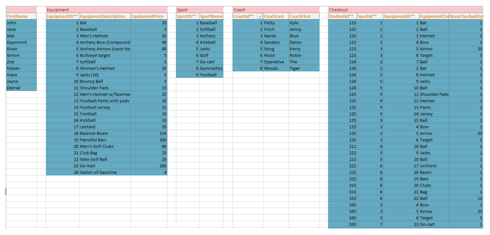Artifact 2: Database Planning: Initial Layout Sketch
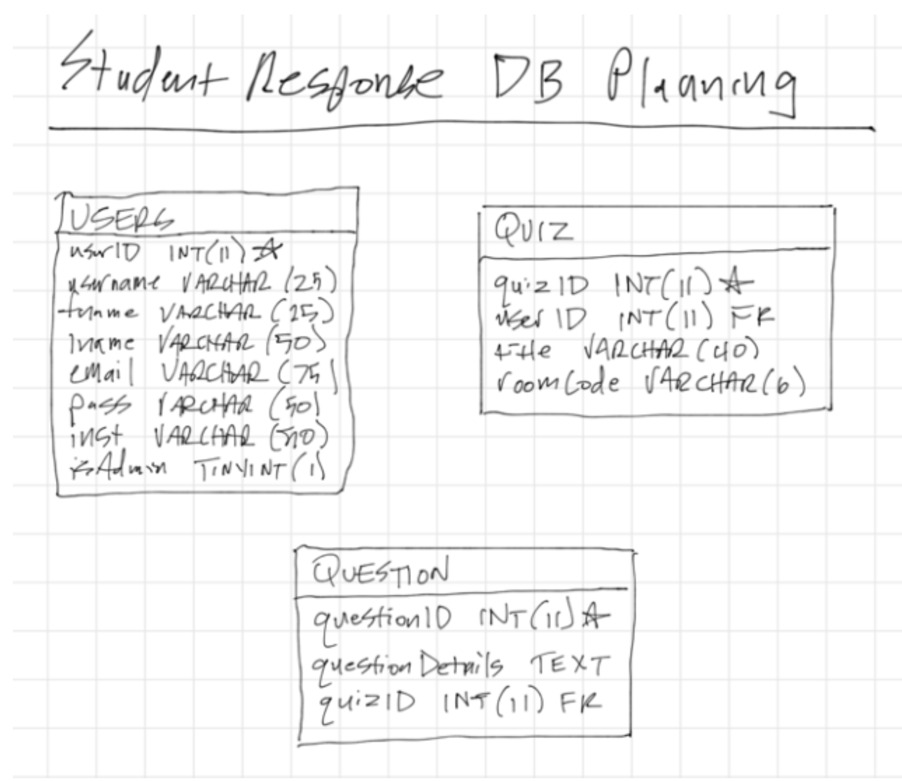This rough sketch of a database was used for my group’s final capstone project for an online web application called a “Student Response System”. The sketch shows the tables that will be implemented into the database, along with the columns in each table, and the data types associated with each field/column. Stars next to certain columns indicate that that column as a “Primary Key” in the table. “FK” next to a column indicates that column is used as a “Foreign Key” in that table, which is a primary key on another table. This is the basis of a Relational Database Management System.
Implementation of the Initial Plan and Structure
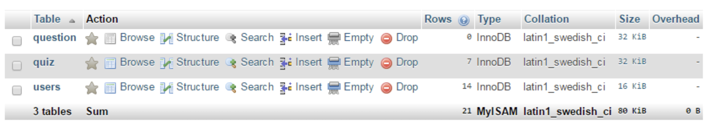This image shows the tables built in a MySQL Database using phpMyAdmin. The three tables initially planned for have been created.
'Users' Table
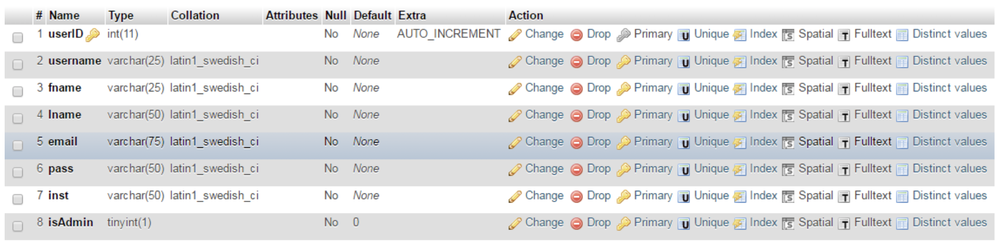This image shows the structure of the Users table. You can see the datatypes and limitations have been implemented into the live database, with ‘userID’ being the Primary Key.
'Quiz' Table

This image shows the structure of the Quiz table, with ‘quizID’ being the Primary Key. A Foreign Key Restraint was set up on the ‘userID’ field to relate it to the userID field on the ‘Users’ table.
'Question' Table
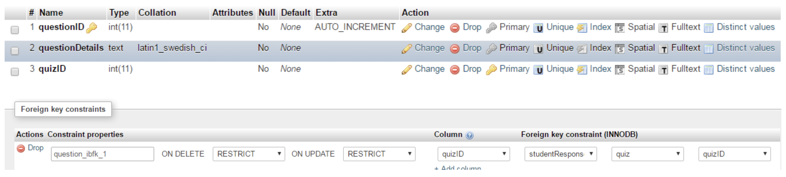This image shows the Question table, with ‘questionID’ being declared as the Primary Key. A Foreign Key Restraint was set up on the ‘quizID’ field to relate it to the quizID field on the ‘Quiz’ table.
Outcome 3 Reflection
The process of structuring a database can be a tedious, yet vital step in getting a database up and running for a company or website. The process starts with normalization and ends with the actual implementation of the data and ideas built during the planning stage into a live, functional relational database.
Through this multi-step process, I learned how data within the tables relates to each other, and how important it is to set up the appropriate indexes and key restraints within the database. The true power in a RDBMS comes from joining fields together so that you can create unique and meaningful queries between all the sets of data. I’ve learned that a strong, properly structured database is essential to any company or web service operating in an efficient way. Online stores, data driven websites, and even WordPress installations all depend on these databases to function and serve their customers.
Outcome Four:
Create Web Solutions Using a Variety of Programming Languages
Artifact 1: HTML[5] and CSS[3]
HTML and CSS are some of the most basic, yet most essential programming ‘languages’ found in the Web Programming field. They form the building blocks for all web pages found on the internet. HTML and CSS are also used to format rich text email messages you receive every day. Below is an example of basic HTML and how it appears on the web.
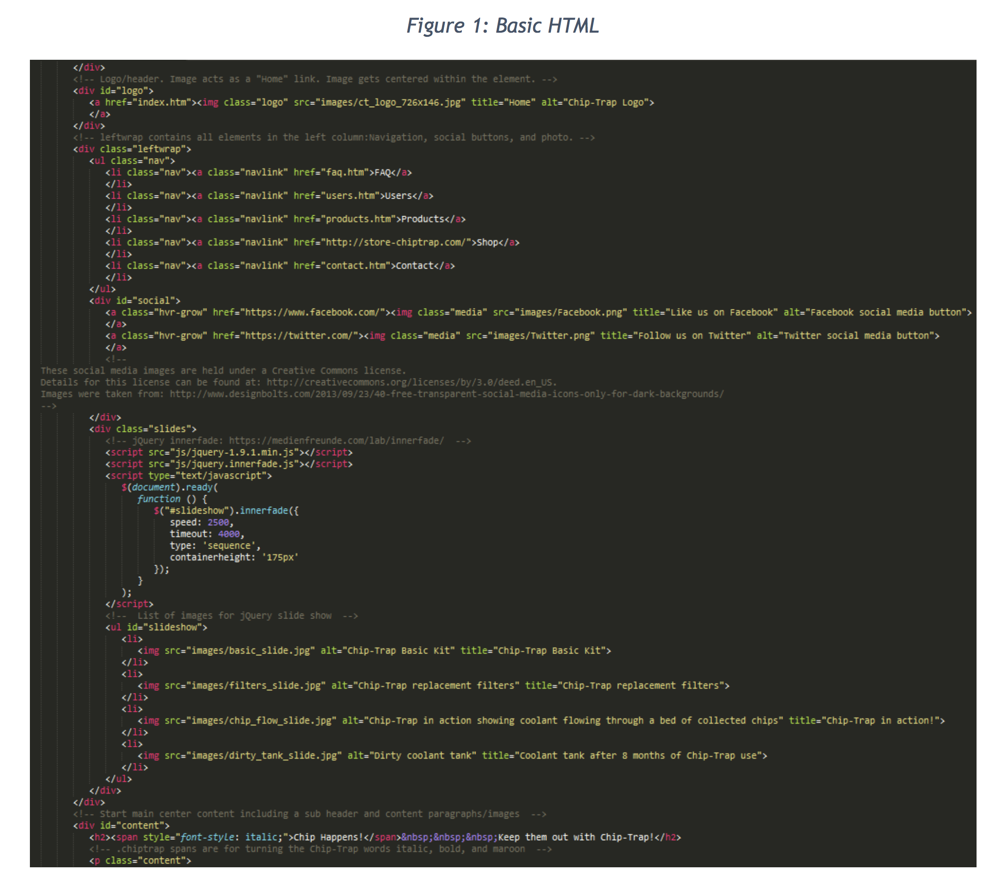 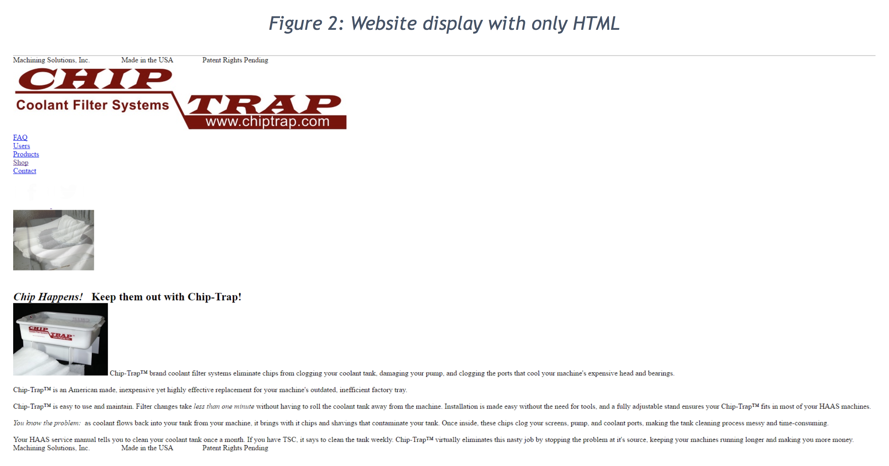Figure 1 shows a sample of basic HTML code. Figure 2 shows the output of that code. As you can see, the output of the code appears to be very simplistic and relatively ‘boring’ according to today’s web standards. This is where the power of CSS comes in. CSS allows you to set rules for HTML elements and how they appear on the page, giving style and substance to an otherwise plain web site. Below is an example of some CSS code and how it transforms the website in Figure 2 into a richer, more appealing website.
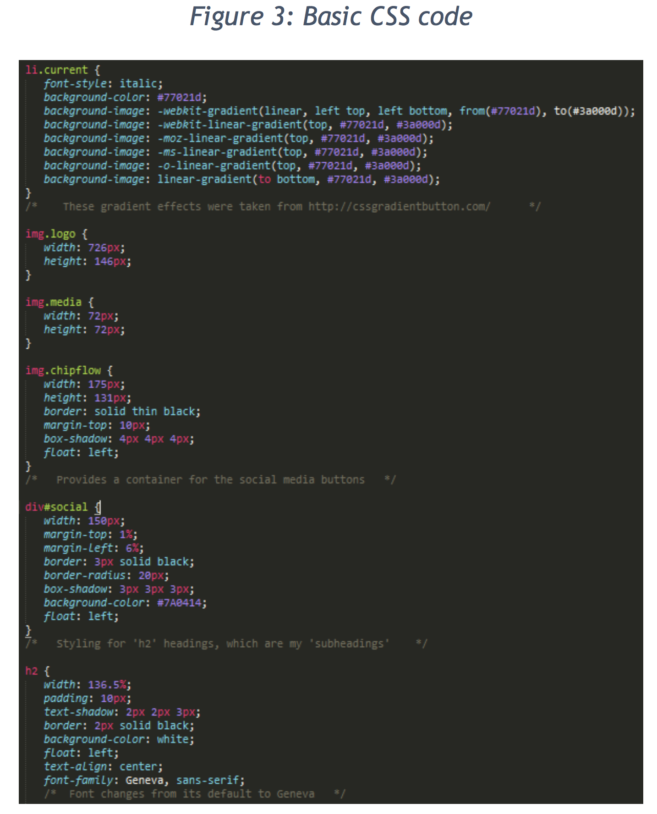
As you can see, CSS adds all of the “character” and feel to a website. It is essential in the modern web era to ensure your CSS keeps up with the current web trends and suits the desires and needs of your clients. Without CSS, you’re left with something like Figure 2.
Artifact 2: PHP
PHP is a server-side scripting language enabling you to create powerful, dynamic web pages and applications that work seamlessly with HTML. Users can interact with the webpage in ways that simply are not possible with other languages, and it allows you to collect and store information about the user and the web page that bring about a rich user friendly environment. I’ve included two examples of PHP code and how it appears when displayed on the web.
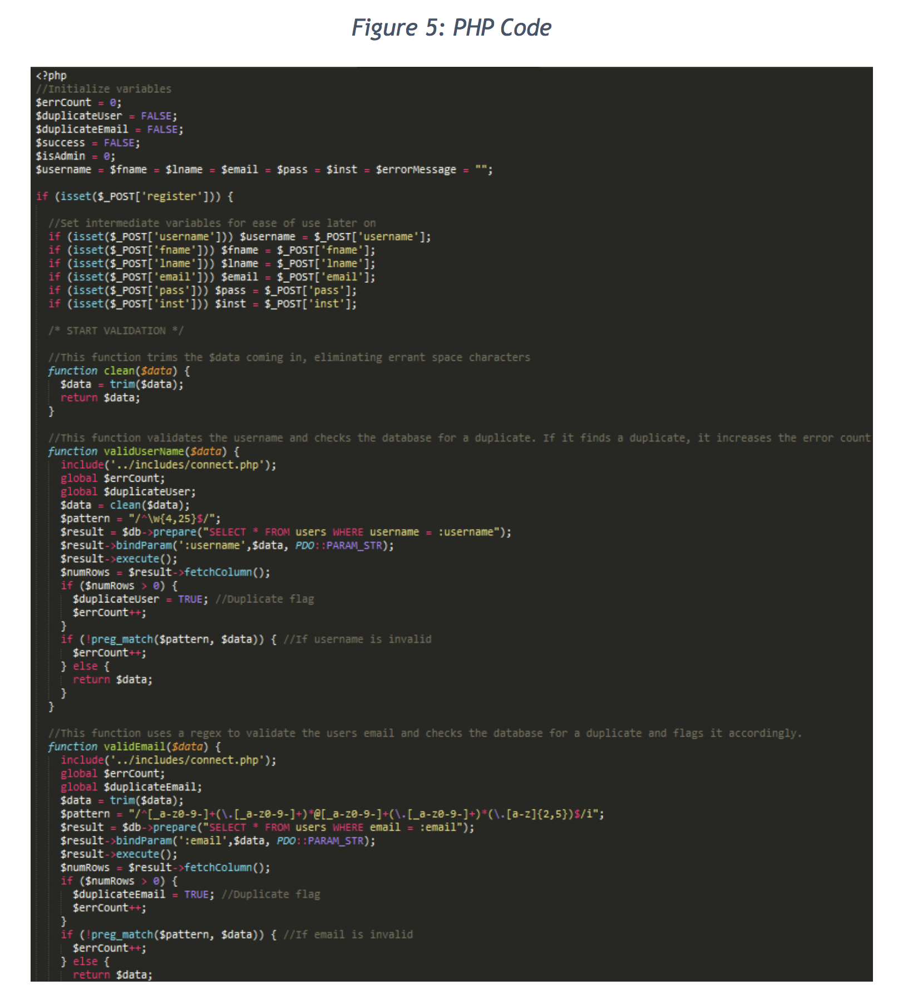 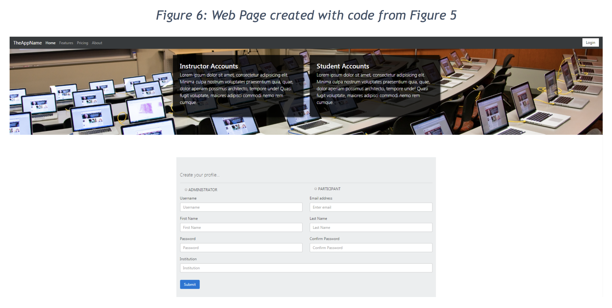PHP seamlessly allows you to connect with databases allowing for user registration forms and dynamic content. It is very powerful and even makes use of Object Orient concepts to create truly powerful and interactive web pages.
Outcome 4 Reflection
Throughout my programming classes, I’ve learned how every programming language has a purpose, and some of them do some things better than others. It’s all about finding the right tool for the job. I have that some languages, such as Python, are great for scripting and controlling physical devices like digital clocks, whereas others like C++ and C# can be dynamic and near limitless, allowing you to create video games and rich applications that many people use on a regular basis. Discovering and using new programming languages has kept me motivated and excited to move into the programming field.
Outcome Five:
Articulate development solutions to peers and supervisors.
Artifact 1: Agile Development and User Stories
Agile development is a design philosophy that involves a multi-step repeatable process of gathering input from potential users of your product or service, preparing a backlog of tasks to accomplish, and setting small, achievable goals that you present on a regular basis called “sprints”. This process allows the development team to always have a ‘working’ product to show the client after each sprint phase.
In my capstone project, my team has been using agile development to develop our web application.
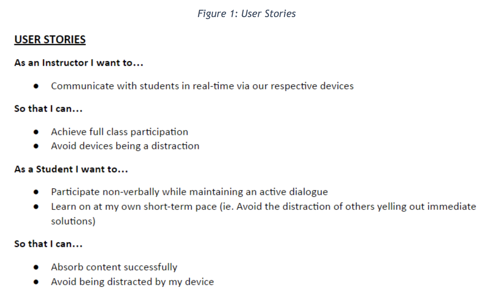In Figure 1, you can see an example of a user story. This is the first step in the agile process. It involves collecting a list of “requirements” and desired outcomes for each user of your product. They are collected in story format to ensure the developers can accomplish not only a specific task, but achieve the overall desire of what a user is looking for from their product.
Artifact 2: Agile Development and Feature Backlog
A feature backlog is a list of features that the client and developers want to implement in their product. This is where you make note of features that you wish to build and also a place you can make not of potential pitfalls and ask questions about what features are necessary or optional. It sets the pace for the development cycle and works as an ongoing “to do” list.
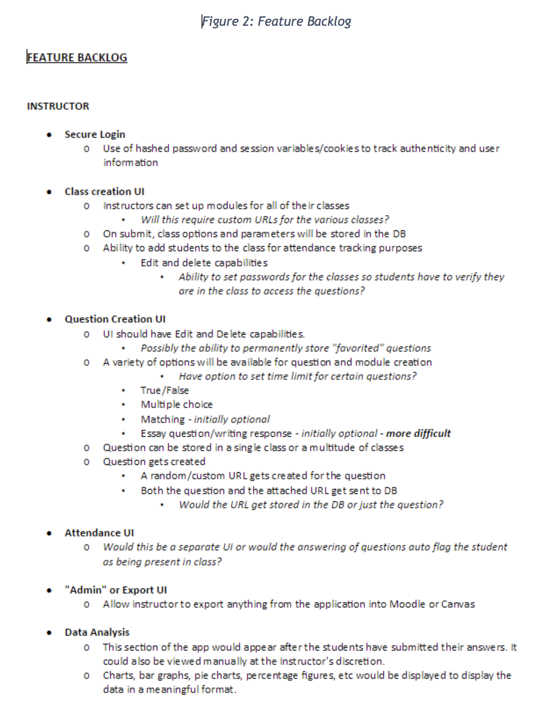Figure 2 lists a backlog we have used for one portion of our project. It lists the features we wish to implement and is an ongoing process of checking with the client and editing the requirements that need to be built into the project. Every aspect of the project can have a backlog, and an overarching backlog is formed in the end to ensure all features have been implemented.
Outcome 5 Reflection
The process of agile development has taught me how to not only plan a project, but how to gather relevant information about the audience that will be using the product. It is difficult to get out of your own “developer” thought process while building an application, and this style of development allows you to connect with your client in unique ways and to constantly keep them up to date with the latest iterations. This allows for constant feedback from your client, enabling you to explain and articulate the development goals in a way that the client can understand because they always have a working copy of each iteration after each sprint is concluded. It eliminates the amount of “developer speak” that takes place between developer and client.
I have learned that the process of agile development keeps you close to your client while ultimately achieving your goals as a developer.